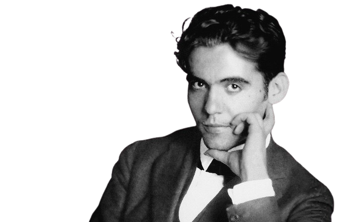
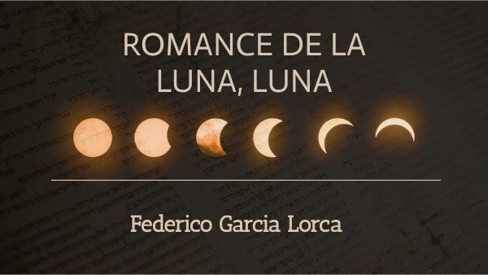

Federico García Lorca fue un poeta, dramaturgo y director de teatro español, nacido el 5 de junio de 1898 en Fuente Vaqueros, Granada, y fallecido el 19 de agosto de 1936 en algún lugar cercano a Alfacar, Granada. Es una de las figuras más importantes de la literatura española y mundial del siglo XX.
Sus obras, que incluyen poesía, teatro y prosa, están imbuidas de un estilo poético único y una profunda sensibilidad. Lorca es conocido por obras como "Bodas de sangre", "Yerma" y "La casa de Bernarda Alba", que exploran temas como el amor, la pasión, la represión social y la muerte.
Además de su trabajo como escritor, García Lorca también estuvo involucrado en el mundo del teatro como director y colaborador en la fundación de la compañía teatral La Barraca, que llevaba obras clásicas a pueblos y aldeas de España.
Su vida y obra están marcadas por su compromiso con la defensa de la cultura popular española y su lucha contra la intolerancia y la injusticia. Trágicamente, Lorca fue asesinado durante la Guerra Civil Española debido a sus simpatías republicanas y su homosexualidad, convirtiéndose en un símbolo de la represión cultural y política de su época. A pesar de su corta vida, su legado literario sigue siendo ampliamente estudiado y celebrado en todo el mundo.
ROMANCE DE LA LUNA, LUNA
La luna vino a la fragua con su polisón de nardos. El niño la mira, mira. El niño la está mirando. En el aire conmovido mueve la luna sus brazos, y enseña, lúbrica y pura, sus senos de duro estaño. Huye luna, luna, luna. Si vinieran los gitanos, harían con tu corazón collares y anillos blancos. Niño, déjame que baile. Cuando vengan los gitanos, te encontrarán sobre el yunque con los ojillos cerrados. Huye luna, luna, luna, que ya siento sus caballos. Niño, déjame, no pises El jinete se acercaba tocando el tambor del llano. Dentro de la fragua el niño, tiene los ojos cerrados. Por el olivar venían, bronce y sueño, los gitanos. Las cabezas levantadas y los ojos entornados. Cómo canta la zumaya, ¡ay, cómo canta en el árbol! Por el cielo va la luna con un niño de la mano. Dentro de la fragua lloran, dando gritos, los gitanos. El aire la vela, vela. El aire la está velando.